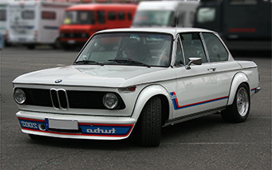
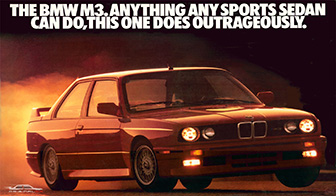
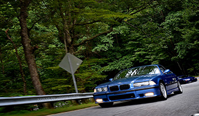

One of the best parts of BMW is the history of the brand and the vintage styling that comes with their oldest cars. Listed below are three of the many iconic vehicles BMW has produced over the years.
History of the Company
In 1918, three German manifacturing companies merged together to form the company known as Bayerische Motorenwerke or BMW. During WWII, BMW was manufacturing material for the German army, mainly aircraft. This was one of the darkest times for the company because they had to use POW and forced labor in order to keep up with produciton demands. Throughout the war, the Allied forces would tear down and take over the BMW factories because they were helping the German army. This forced the company to start producing household items like pots and pans in order to keep the company alive until they were able to produce vehicles again. After the war was over, BMW began rebuilding and developed the company into one that would create timeless pieces of machinery. BMW has battled through some of the darkest times in the world and held strong eventually become one of the most well known car manufacturers of all time.
The BMW 2002
In the eyes of BMW enthusiasts, the 2002 was the starting point of the oldschool BMW craze. Produced between 1966 and 1977, the 2002 was anything but fast sporting a small 4 cylinder engine with around 130 horsepower. Even though it wasn't a sports car, it was innovation at its finest. The 2002 included the first model BMW offered with a turbocharged engine, the 2002 Turbo. Despite the lack of speed and power, the 2002 is regarded as a classic for it's timeless styling and humble look. Don't assume they are worth nothing though, there have been restored 2002s that have racked up a price tag of nearly 100 thousand dollars! A perfect example that style comes with it's own price tag.
The BMW E30
Althought there are many legendary BMW models between the 2002 and the E30 series, the E30 has developed such a cult following that it has earned it's place as one of the most popular BMWs to the common enthusiast. Produced from 1982 to 1994, the E30 was easily the most versitile BMW at the time, coming in every option imaginable. This car was offered in anything from coupe to sedan, convertible to wagon, and even an all-wheel drive option. They were offered in a various economical 4 cylinder motors or sporty 6 cylinder motors. However, the most important model of the E30 was the M3. This was the first model in the long line of legendary sports cars known as the M3. M3's take the normal chassis and turn it into an off the shelf raceable vehichle. Every inch of the performance side of the car is touched and made into a rear wheel drive monster.
The BMW E36
The BMW E36 models were produced from 1990 to 1999. This served as the replacement to the E30 models. The E36 had a more modern look than the E30 and was highly praised for it's handling qualities. Just like the E30, the E36 came with multiple different body styles and performace options. It was listed in the "10 Best Cars" list in the Car and Driver magazine every year of it's production. The E36s handling and performance has kept it alive in the enthusiast world for over 20 years and some say it still drives better than brand new sports cars.